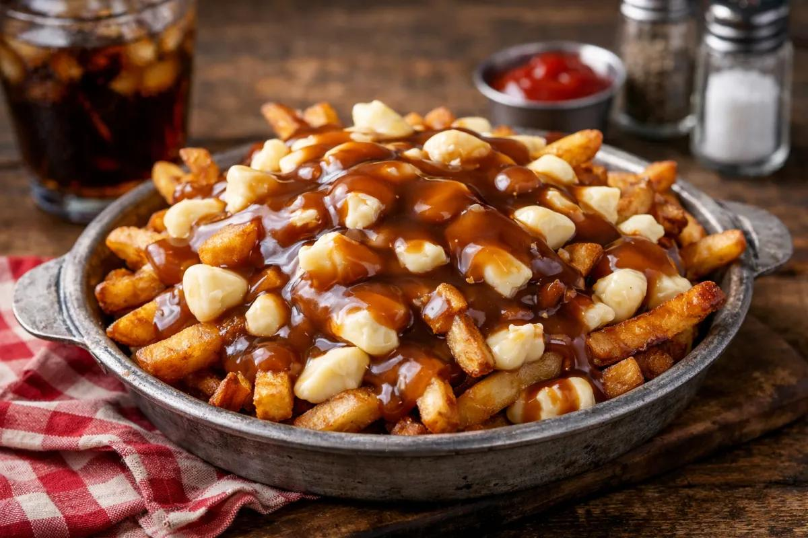
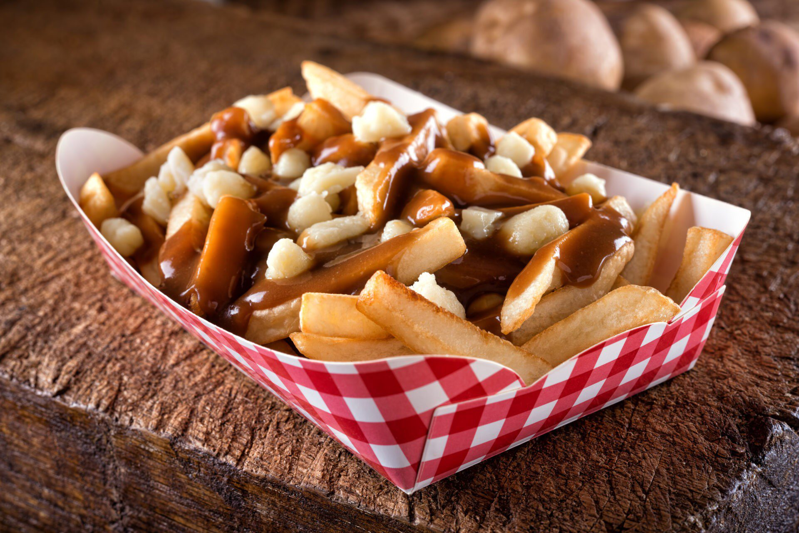
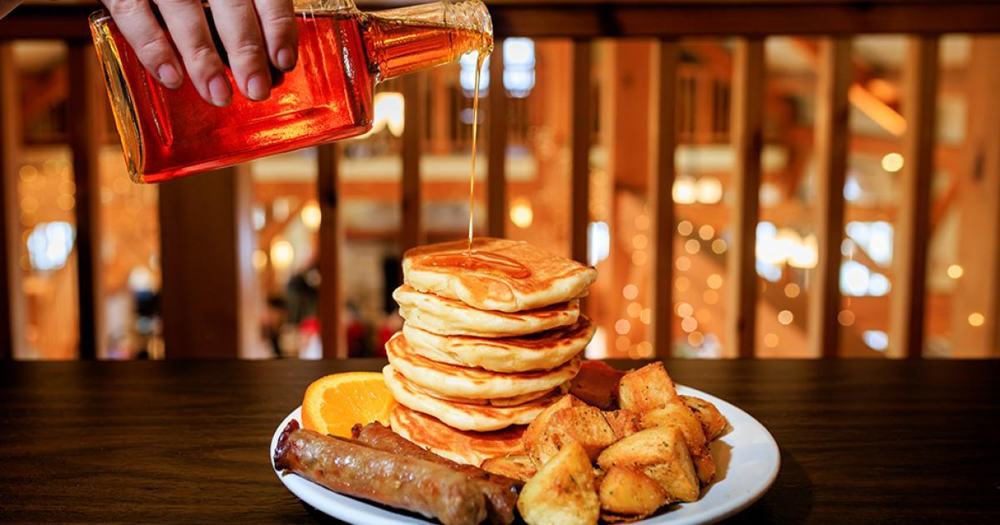
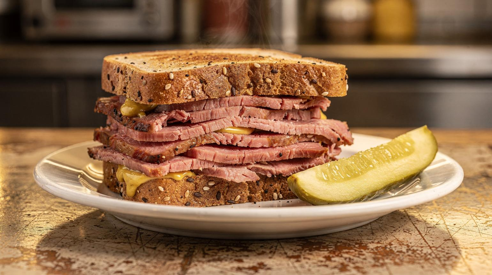
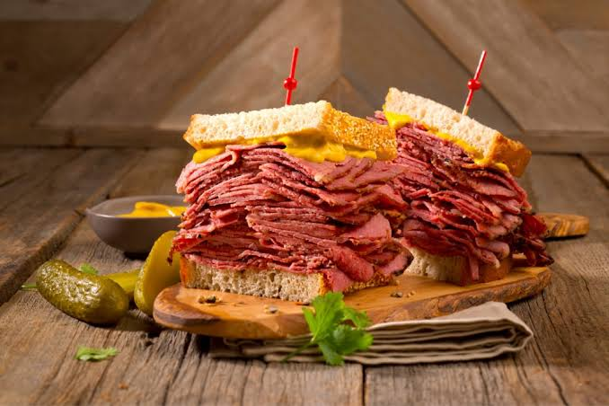
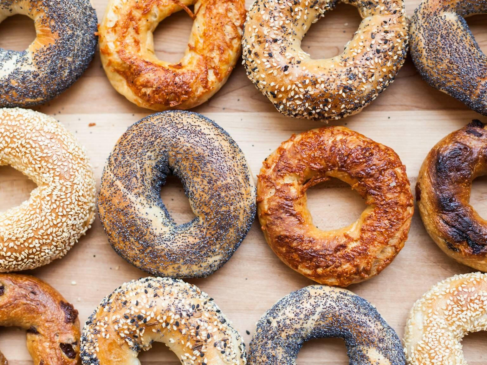
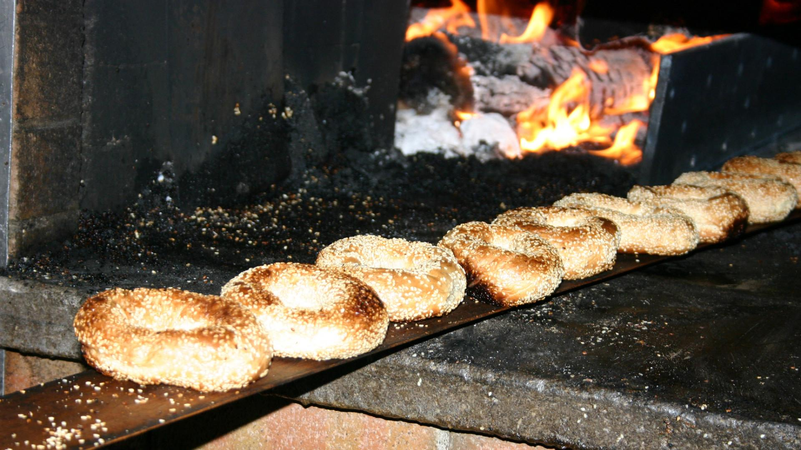
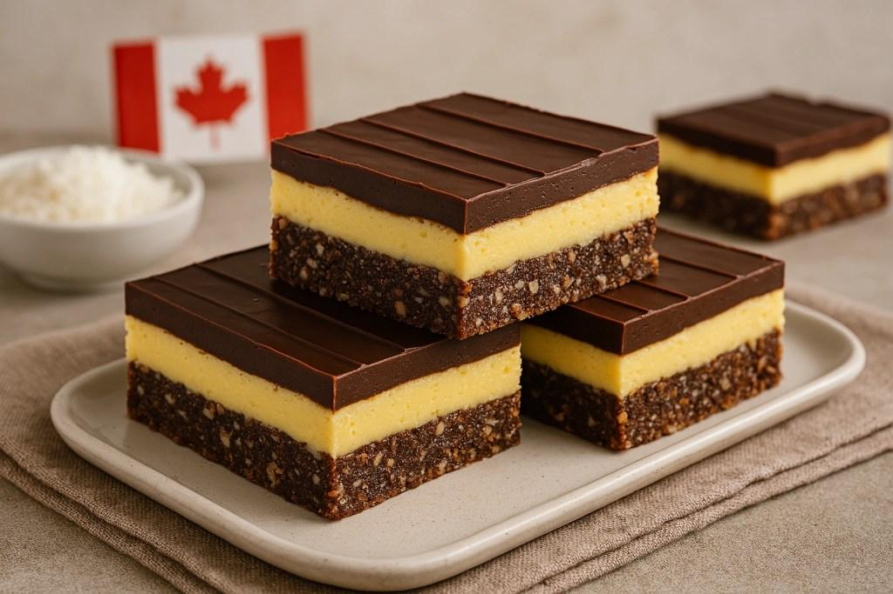
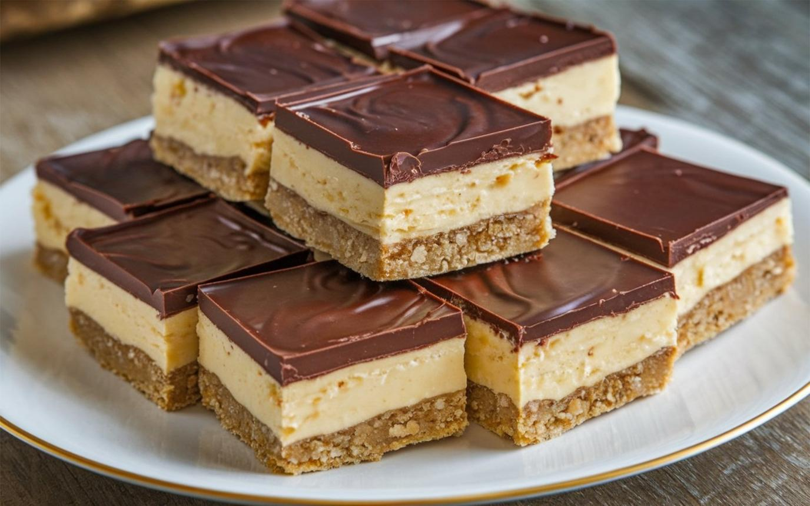

Gastronomia canadense: 5 pratos e sabores que você precisa conhecer
A gastronomia do Canadá é tão diversa quanto suas paisagens. A culinária do país reúne influências indígenas, francesas, britânicas e de comunidades de imigrantes, criando uma combinação de receitas tradicionais, ingredientes regionais e pratos contemporâneos. Para brasileiros que nunca visitaram o Canadá, experimentar a comida local é uma maneira interessante de conhecer a cultura do país. De pratos reconfortantes para os dias frios a sobremesas com xarope de bordo, existem sabores que merecem um lugar no roteiro de viagem.
Poutine: um dos pratos mais famosos do Canadá

A poutine é um prato originário de Quebec que se tornou um dos símbolos mais conhecidos da culinária canadense. Sua receita tradicional combina batatas fritas, pedaços de queijo fresco chamados cheese curds e molho quente à base de caldo, geralmente de carne.
A combinação de batatas crocantes, queijo macio e molho quente cria uma refeição bastante reconfortante.
Para brasileiros, pode lembrar uma porção de batatas com queijo e molho, mas a versão tradicional tem uma textura característica, especialmente por causa do queijo fresco.
A poutine pode ser encontrada em lanchonetes, restaurantes e estabelecimentos especializados. Existem também variações com carne desfiada, bacon e outros ingredientes.
Curiosidade: a origem exata da poutine é discutida, mas sua popularização está associada à região rural de Quebec, na década de 1950.

Xarope de bordo (Maple Syrup): um dos sabores mais tradicionais do país
O xarope de bordo é um dos produtos mais associados à identidade gastronômica do Canadá. Conhecido internacionalmente como maple syrup, ele é produzido a partir da seiva de árvores do gênero Acer, especialmente em regiões como Quebec. É utilizado para adoçar panquecas, waffles, sobremesas e diversas preparações.
Uma das maneiras mais populares de provar o xarope é em um café da manhã com panquecas e manteiga. Seu sabor é adocicado, com notas que lembram caramelo, madeira e açúcar tostado, dependendo do produto.
Onde experimentar: Quebec e outras regiões produtoras de xarope de bordo, especialmente durante a primavera.
Curiosidade: a produção do xarope está ligada a conhecimentos tradicionais dos povos indígenas da América do Norte, posteriormente incorporados à culinária regional.

Montreal Smoked Meat: o famoso sanduíche de carne defumada

O Montreal smoked meat é um sanduíche tradicional de Montreal, em Quebec, preparado com carne bovina curada, temperada e defumada, normalmente servida em fatias generosas sobre pão de centeio. A mostarda amarela costuma acompanhar a receita.
Para quem gosta de churrasco, carnes defumadas e sanduíches bem recheados, essa é uma experiência gastronômica interessante. O sabor é marcante devido ao processo de cura, aos temperos e à defumação.
O sanduíche costuma ser acompanhado por picles e pode ser servido com batatas fritas. É uma refeição prática para quem está explorando a cidade e quer experimentar uma especialidade local.
Onde experimentar: Montreal, especialmente em delicatessens tradicionais especializadas em carne defumada.
Curiosidade: a tradição está ligada à história das comunidades judaicas de Montreal e à influência de diferentes culturas na gastronomia da cidade.

Bagels de Montreal: uma tradição de padaria

Os bagels de Montreal são pães em formato de anel, conhecidos por seu tamanho relativamente pequeno, textura firme e leve dulçor. Tradicionalmente, são preparados em um processo que pode incluir fervura em água com mel antes de serem assados em forno a lenha.
Em comparação com outras variedades de bagel, a versão de Montreal costuma ter uma casca mais dourada e um interior denso e levemente adocicado. É comum encontrá-la coberta com sementes de gergelim ou papoula.
Para brasileiros, pode ser interessante conhecer a cultura das padarias locais e experimentar o pão ainda quente, puro ou acompanhado de cream cheese.
Onde experimentar: Montreal, em padarias tradicionais especializadas em bagels.
Curiosidade: a receita tem forte influência da imigração judaica e se tornou parte importante da identidade culinária da cidade.

Nanaimo Bars: a sobremesa em três camadas

As Nanaimo bars são sobremesas canadenses originárias de Nanaimo, cidade localizada na província da Colúmbia Britânica. Tradicionalmente, são preparadas em três camadas: uma base de biscoito e coco, um recheio cremoso com sabor de creme e uma cobertura de chocolate.
A sobremesa lembra um doce de tabuleiro, mas combina uma base crocante com um recheio macio e uma cobertura firme de chocolate. Normalmente, não precisa ser assada, o que torna sua apresentação simples e bastante característica.
É uma ótima escolha para quem gosta de chocolate, coco e doces em camadas.
Onde experimentar: cafés, confeitarias e estabelecimentos especializados em sobremesas na Colúmbia Britânica. Também pode ser encontrada em outras regiões do país.
Curiosidade: seu nome vem da cidade de Nanaimo, onde essa sobremesa se tornou um símbolo gastronômico local.
